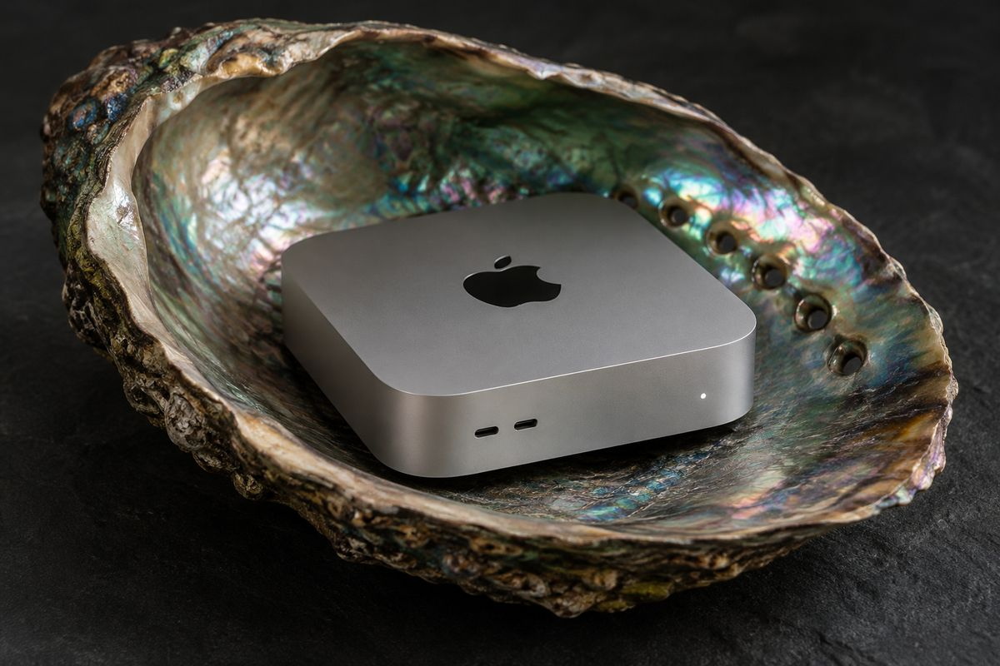
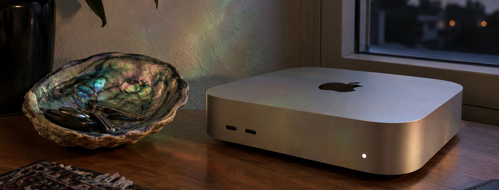
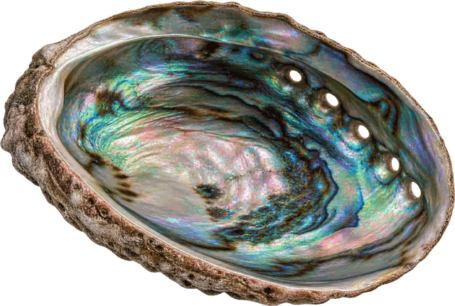

Node 0.3.0 · historical experiment
How the shared-key network worked
Dsmack Node was an earlier experiment in admitting Macs to a shared-key network. Each Mac presented Apple's attestation of its app build. Admitted Macs could pass the same key to one another, encrypted for the receiving node. The release below records that workflow; the current runner instead launches a task in a VM and returns evidence for that run.
- The participant downloaded Dsmack Node and extracted the ZIP.
- Opening the app started enrollment. The app displayed You’re in. once it held the key.
- Choosing Share in public node directory… opted the node into the directory.
—nodes online now
SHA-256 dd59b06b8bfbb6142e4d01bbbea67b3205a881ea9d3614c5d12a23ee00b2675b
The 0.3.0 release was signed with Developer ID and notarized. If macOS refuses to open it, do not change Gatekeeper settings; check the SHA-256 and see troubleshooting.


The experiment used participants’ own Macs as persistent nodes.
Admission, shared keys and operators
How admission worked
- An app anyone can build. The source is public. Anyone with an Apple Developer account can build Dsmack Node and sign it themselves. Build instructions.
- Admission by app measurement. A Mac joined by showing Apple's attestation of its app build. The registry compared that build with its admitted measurements, allowing independently signed copies of the same admitted code.
- One shared key. Every admitted node held the same key. Transfers were sealed to the receiving admitted node. A compromise of one node could expose the shared key.
- A testnet. The experiment used Base Sepolia to exercise admission across independently operated Macs. Its participation receipt had no monetary value.
Operating the network
- Participant-owned Macs. The Macs belonged to participants, on their own desks and shelves.
- Operator responsibilities. Operators could refuse service, delay or drop requests, or stop the seed nodes that helped new participants connect. The registry key holder chose which builds were admitted next, with changes recorded on chain.
- Network addresses. The Node app did not hide a participant’s IP address. Node details.
Earlier network directory
Reading the earlier relay directory · All nodes
If the earlier relay responds, Online means a signed check-in in the last 90 seconds. Listing was opt-in. These entries describe shared-key nodes; current task runs appear on the bounty dashboard.

The companion coupon workflow
Abalone was the companion app for coupons. A coupon requested an API key for private inference, created inside an admitted node and sealed to the recipient.
The recipient opened a gift link, installed Abalone, redeemed the coupon and opened a fresh terminal. This workflow used the earlier shared-key service and did not require the recipient to run a node.
Read the Abalone coupon documentationSay hello
Historical discussion is in Discussions. For the current runner, use the setup guide or project issues.